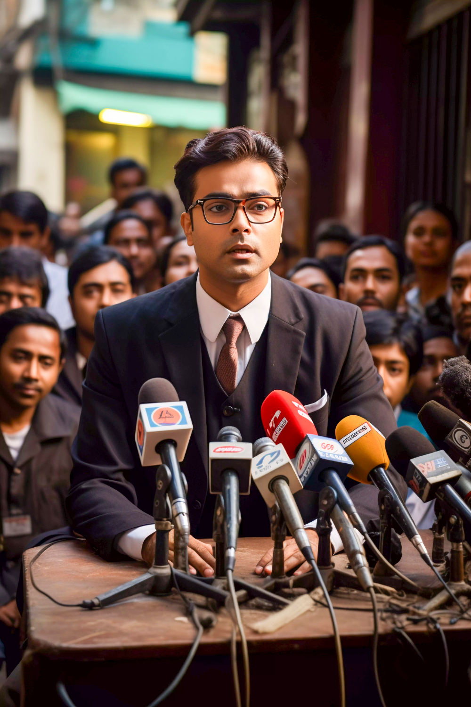

Welcome to Mr. Arun's Online Course for Aspiring Journalists
Unlock your potential and become a successful journalist with this 2-week online course.
Learn MoreAbout Mr. Arun
Mr. Arun is a retired journalist with over 30 years of experience in the field. He has worked for various reputed news channels and newspapers. He is passionate about sharing his knowledge and experiences with aspiring journalists.
Course Overview
This 2-week online course will provide you with practical insights into the world of journalism. You will learn from the best as Mr. Arun shares his experiences and expertise.
- Day 1 to 3: Introduction to Journalism
- Day 3 to 8: Advanced Reporting Techniques
- Day 8 to 12: Investigative Journalism
- Day 12 to 14: Journalism Ethics and Law
By the end of the course, you will have a solid understanding of the field and be equipped with the skills to start your journalism career.
Enroll NowTestimonials
"Mr. Arun's course was a game-changer for me. I learned so much and feel confident in my abilities as a journalist."
- Ramesh Chabra., Senior Journalist(NDTV)
"I would highly recommend Mr. Arun's course to anyone looking to break into journalism. He is an excellent teacher and mentor."
- Reena Singh., Aspiring Journalist